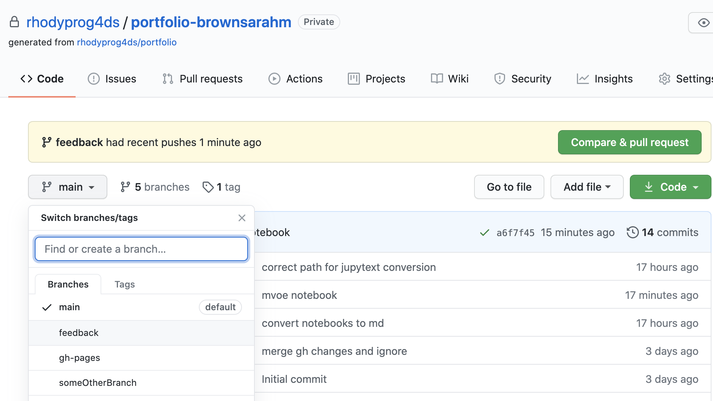
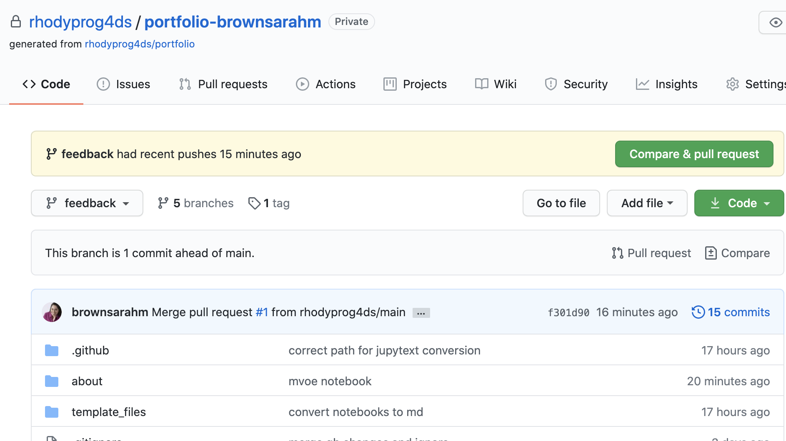
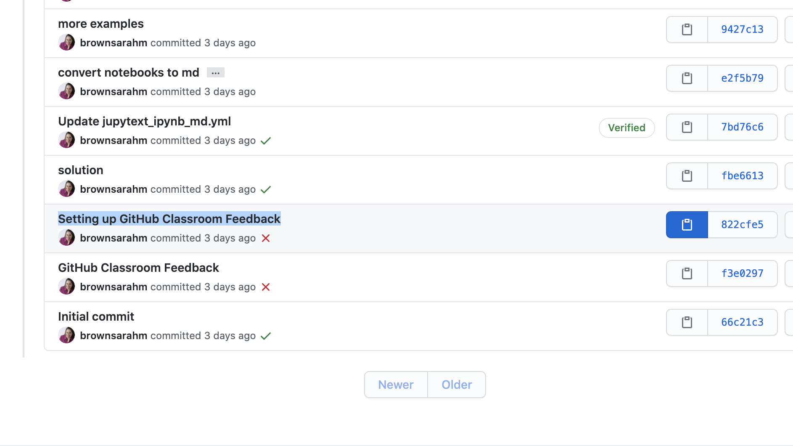
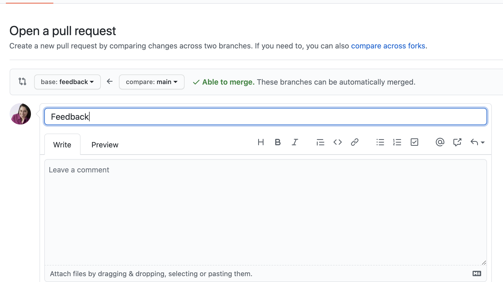

Git and GitHub#
I can’t push to my repository, I get an error that updates were rejected#
If your error looks like this…
! [rejected] main -> main (fetch first)
error: failed to push some refs to <repository name>
hint: Updates were rejected because the remote contains work that you do
hint: not have locally. This is usually caused by another repository pushing
hint: to the same ref. You may want to first integrate the remote changes
hint: (e.g., 'git pull ...') before pushing again.
hint: See the 'Note about fast-forwards' in 'git push --help' for details.
Your local version and github version are out of sync, you need to pull the changes from github to your local computer before you can push new changes there.
After you run
git pull
You’ll probably have to resolve a merge conflict
My command line says I cannot use a password#
GitHub has strong rules about authentication You need to use SSH with a public/private key; HTTPS with a Personal Access Token or use the GitHub CLI auth
Help! I accidentally merged the Badge Pull Request before my assignment was graded#
That’s ok. You can fix it.
note: these instructions use the main branch the way we use the badge branches and the feedback branch the way we use the main branch in this course
You’ll have to work offline and use GitHub in your browser together for this fix. The following instuctions will work in terminal on Mac or Linux or in GitBash for Windows. (see Programming Environment section on the tools page).
First get the url to clone your repository (unless you already have it cloned then skip ahead): on the main page for your repository, click the green “Code” button, then copy the url that’s show

Next open a terminal or GitBash and type the following.
git clone
then past your url that you copied. It will look something like this, but the last part will be the current assignment repo and your username.
git clone https://github.com/rhodyprog4ds/portfolio-brownsarahm.git
When you merged the Feedback pull request you advanced the feedback branch, so we need to hard reset it back to before you did any work. To do this, first check it out, by navigating into the folder for your repository (created when you cloned above) and then checking it out, and making sure it’s up to date with the remote (the copy on GitHub)
cd portfolio-brownsarahm
git checkout feedback
git pull
Now, you have to figure out what commit to revert to, so go back to GitHub in your browser, and swithc to the feedback branch there. Click on where it says main on the top right next to the branch icon and choose feedback from the list.

Now view the list of all of the commits to this branch, by clicking on the clock icon with a number of commits

On the commits page scroll down and find the commit titled “Setting up GitHub Classroom Feedback” and copy its hash, by clicking on the clipboard icon next to the short version.

Now, back on your terminal, type the following
git reset --hard
then paste the commit hash you copied, it will look something like the following, but your hash will be different.
git reset --hard 822cfe51a70d356d448bcaede5b15282838a5028
If it works, your terminal will say something like
HEAD is now at 822cfe5 Setting up GitHub Classroom Feedback
but the number on yours will be different.
Now your local copy of the feedback branch is reverted back as if you had not merged the pull request and what’s left to do is to push those changes to GitHub. By default, GitHub won’t let you push changes unless you have all of the changes that have been made on their side, so we have to tell Git to force GitHub to do this.
Since we’re about to do something with forcing, we should first check that we’re doing the right thing.
git status
and it should show something like
On branch feedback
Your branch is behind 'origin/feedback' by 12 commits, and can be fast-forwarded.
(use "git pull" to update your local branch)
Your number of commits will probably be different but the important things to see here is that it says On branch feedback so that you know you’re not deleting the main copy of your work and Your branch is behind origin/feedback to know that reverting worked.
Now to make GitHub match your reverted local copy.
git push origin -f
and you’ll get something like this to know that it worked
Total 0 (delta 0), reused 0 (delta 0)
To https://github.com/rhodyprog4ds/portfolio-brownsarahm.git
+ f301d90...822cfe5 feedback -> feedback (forced update)
Again, the numbers will be different and it will be your url, not mine.
Now back on GitHub, in your browser, click on the code tab. It should look something like this now. Notice that it says, “This branch is 11 commits behind main” your number will be different but it should be 1 less than the number you had when you checked git status. This is because we reverted the changes you made to main (11 for me) and the 1 commit for merging main into feedback. Also the last commit (at the top, should say “Setting up GitHub Classroom Feedback”).

Now, you need to recreate your Pull Request, click where it says pull request.

It will say there isn’t anything to compare, but this is because it’s trying to use feedback to update main. We want to use main to update feedback for this PR. So we have to swap them. Change base from main to feedback by clicking on it and choosing feedback from the list.

Then the change the compare feedback on the right to main. Once you do that the page will change to the “Open a Pull Request” interface.

Make the title “Feedback” put a note in the body and then click the green “Create Pull Request” button.
Now you’re done!
If you have trouble, create an issue and tag @@rhodyprog4ds/fall20instructors for help.
For an Assignment, should we make a new branch for every assignment or do everything in one branch?#
Doing each new assignment in its own branch is best practice. In a typical software development flow once the codebase is stable a new branch would be created for each new feature or patch. This analogy should help you build intuition for this GitHub flow and using branches. Also, pull requests are the best way for us to give you feedback. Also, if you create a branch when you do not need it, you can easily merge them after you are done, but it is hard to isolate things onto a branch if it's on main already.